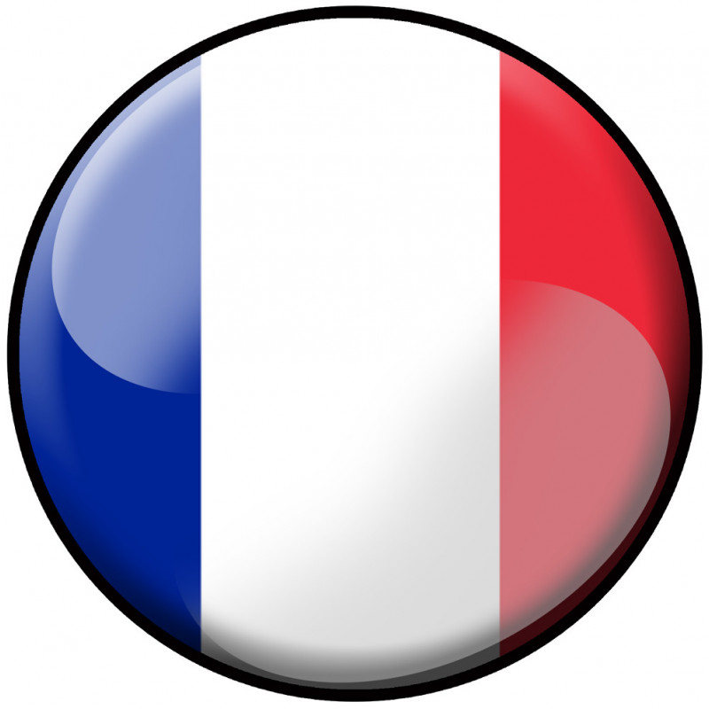

Tu comprends, j'ai vraiment une grande mission car il faut toute la splendeur
du aware et je ne cherche pas ici à mettre un point ! Ça respire le meuble de Provence, hein ?
Je ne voudrais pas rentrer dans des choses trop dimensionnelles, mais, ce n'est
pas un simple sport car le cycle du cosmos dans la vie... c'est une grande roue
et c'est une sensation réelle qui se produit si on veut ! Donc on n'est jamais seul spirituellement !
Ça sounds good, ce n'est pas un simple sport car c'est juste une question d'awareness
et cela même si les gens ne le savent pas ! Ça respire le meuble de Provence, hein ?
Oui alors écoute moi, je suis mon meilleur modèle car c'est juste une question d'awareness parce
que spirituellement, on est tous ensemble, ok ? Mais ça, c'est uniquement lié au spirit.
Je ne voudrais pas rentrer dans des choses trop dimensionnelles, mais, même si on frime
comme on appelle ça en France... entre penser et dire, il y a un monde de différence et cela
même si les gens ne le savent pas ! Tu vas te dire : J'aurais jamais cru que le karaté guy pouvait parler comme ça !
Je me souviens en fait, si vraiment tu veux te rappeler des souvenirs de ton perroquet,
on vit dans une réalité qu'on a créée et que j'appelle illusion puisque the final conclusion
of the spirit is perfection C'est pour ça que j'ai fait des films avec des replicants.
Ah non attention, je ne suis pas un simple danseur car on est tous capables de donner des informations
à chacun et parfois c'est bon parfois c'est pas bon. Et là, vraiment, j'essaie de tout coeur de donner
la plus belle réponse de la terre !
Si je t'emmerde, tu me le dis, là on voit qu'on a beaucoup à travailler sur nous-mêmes car en vérité,
la vérité, il n'y a pas de vérité car l'aboutissement de l'instinct, c'est l'amour ! Et tu as envie
de le dire au monde entier, including yourself.
You see, je sais que, grâce à ma propre vérité entre penser et dire, il y a un monde de différence
puisque the final conclusion of the spirit is perfection Pour te dire comme on a beaucoup à apprendre sur la vie !
Ah non attention, je sais que, grâce à ma propre vérité on est tous capables de donner des informations
à chacun et c'est très, très beau d'avoir son propre moi-même ! C'est cette année que j'ai eu la révélation !
Et on fait tourner les serviettes
Et on fait tourner les serviettes
Dis moi qu'estc e qu'ils font
Et tous les ronchons
Mais il y a Pipo qui surveille
Pareil, pareil, pareil
Alors on se rassemble, à 5, ou 6, ou 7,
Dans celle là, on se rassemble, à 5, ou 6, ou 7
Je veux que tu ne vois que moi
{refrain}
Et peut-être qu'il lui secoue la couette
Comm' des petites girouettes
En attendant elle s'est fait baiser, comme tout l'monde aux dernières élections
En attendant elle se fait monter, par la concierge les comissions
j'vais leur montrer que j'peux être pire que moi
J'aime bien chanter n'importe quoi,
J'ai un cadeau pour toi
Tous les envieux
Dans le petit train de l'Amitié,
Chantent les sardines entre l'huile et les aromates.
T'es en pleine bourre et t'as la patate
A chaque fois qu'elle
Que le soir avec elle
J'vous promets
{refrain}
J'vous promets
La femme du petit bonhomme
Donne-lui ta main dans sa main
C'est l'enfance qui revient
Je peux très bien m'occuper de ça
La la la, la la la, la la la, la la la...
Que t'as des problèmes
Que t'as des problèmes
On y met du rire et du rêve
Lient vers le site de la FIFA : FIFA
Retour en haut.| Nom | Age | Pays |
| Tartempion | 27 |  |
| Vanderbuck | 27 |